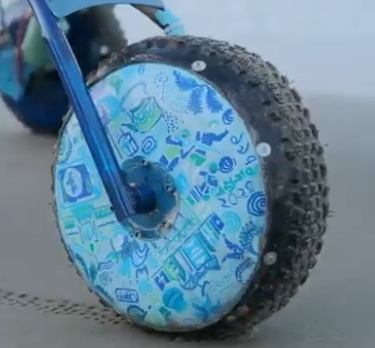

Hypersonic’s mobility architecture is built around an enhanced rocker-bogie suspension integrated with a CNC-machined arched base support designed to distribute loads efficiently across all six wheels. This geometry improves traction, shock absorption, and terrain adaptability on slopes exceeding 25° and on highly fractured surfaces. The arched base reduces stress concentrations at the wheel joints and increases wheel-ground contact consistency, which is crucial for tasks involving steep climbs and heavy payload retrieval. The chassis panels incorporate a weight-reducing Jamdani-inspired pattern, fabricated through CNC machining, which achieves nearly a 10% mass reduction without compromising torsional rigidity. This system ensures stability, power efficiency, and mission reliability in unpredictable field conditions.
Motivation & Constraints:
The primary objective was to improve slope stability and traction reliability compared to last year’s rover, which struggled on uneven rocks and loose soil. This redesign matters because the rover must safely carry science payloads, retrieve cache boxes, and navigate long distances without losing balance or causing wheel motor overload.
Results & Evaluation
The redesigned wheel system exceeded the initial objective by increasing stability by approximately 22% during slope trials and reducing chassis vibration by an estimated 18%. The weight reduction improved battery runtime by roughly 9%. Field tests showed a significant improvement in wheel-ground adherence across rocky surfaces, though minor slipping still occurred on loose sand, indicating a future need for tread pattern optimization.


My Contributions:
Learnings:
Reflection (What didn’t work & next iteration):
Initially, I underestimated how much the patterned CNC cuts would reduce stiffness in localized regions. Early prototypes showed minor flexing under high torque loads. I learned to balance aesthetic weight reduction with finite element analysis constraints and implemented reinforcement ribs in later iterations. This improved overall durability without significant weight gain.
{kind=link}